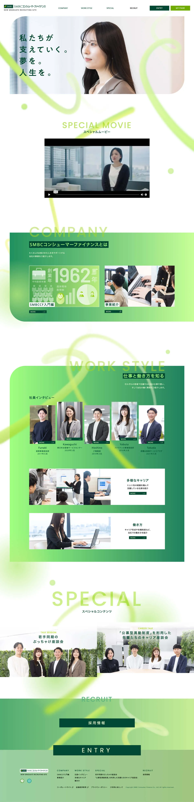
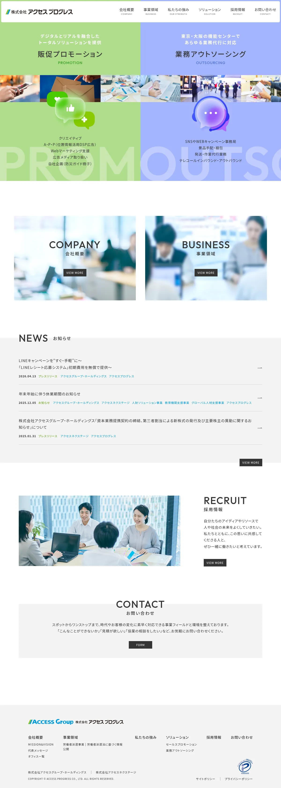
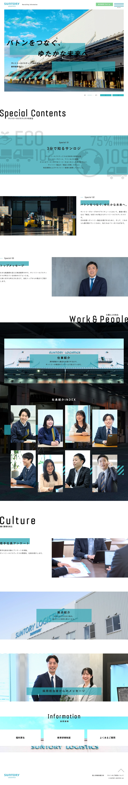
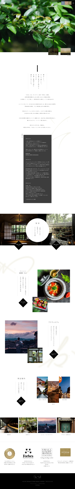
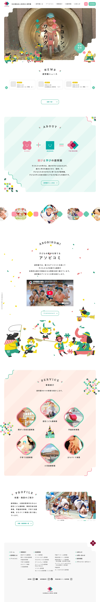
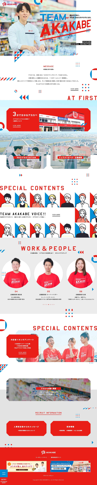
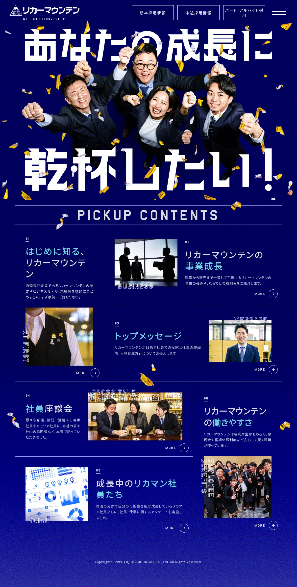

SHIGATSUSHA
1200 × 5604 px
WebPを保存2026年11月18日整理・横幅1200px。画像を押すと大きく表示できます。
提供画像11件を横幅1200pxに統一しました。KINEELもフッターまで入った提供画像に更新済みです。CHUDEN CTIは既存の提供画像を維持しています。
1200 × 5604 px
WebPを保存
1200 × 4950 px
WebPを保存
1200 × 803 px
WebPを保存
1200 × 3358 px
WebPを保存
1200 × 7277 px
WebPを保存
1200 × 13724 px
WebPを保存
1200 × 7572 px
WebPを保存
1200 × 7183 px
WebPを保存
1200 × 5204 px
WebPを保存
1200 × 5952 px
WebPを保存
1200 × 2363 px
WebPを保存